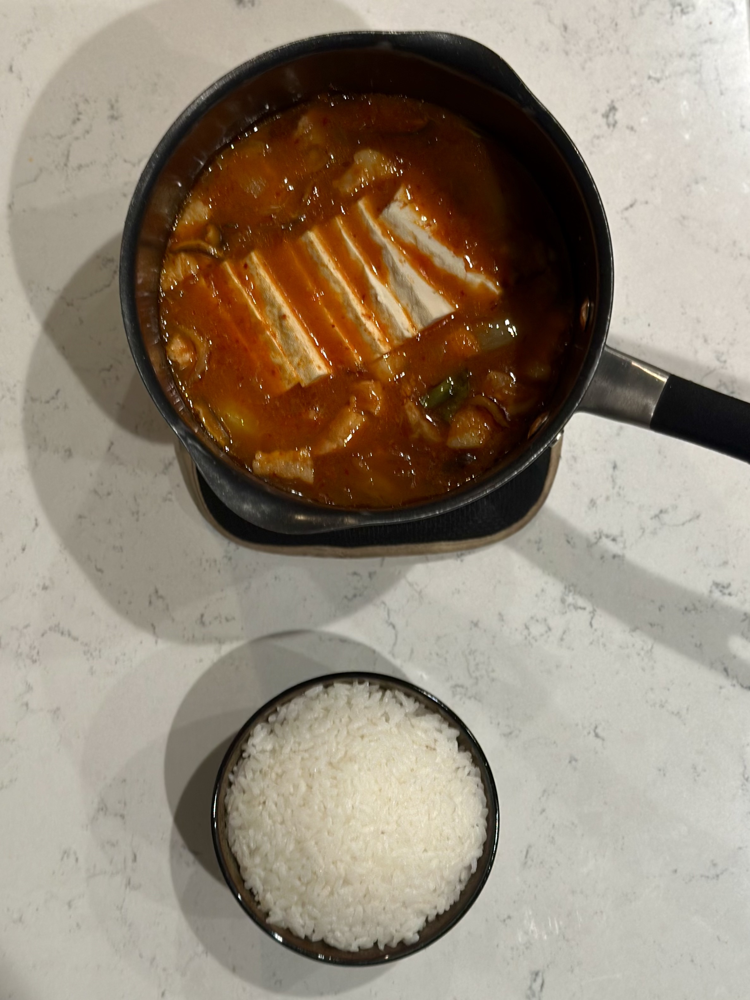
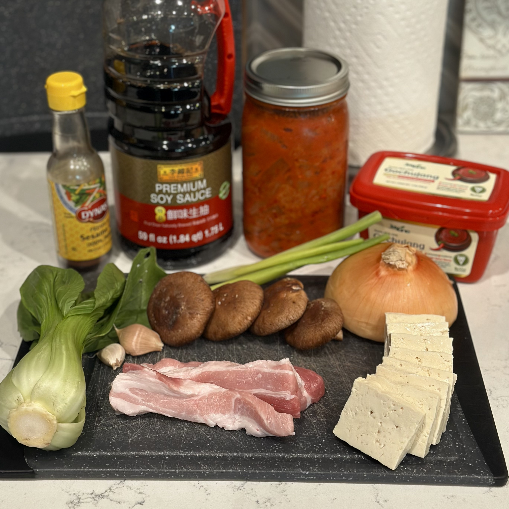
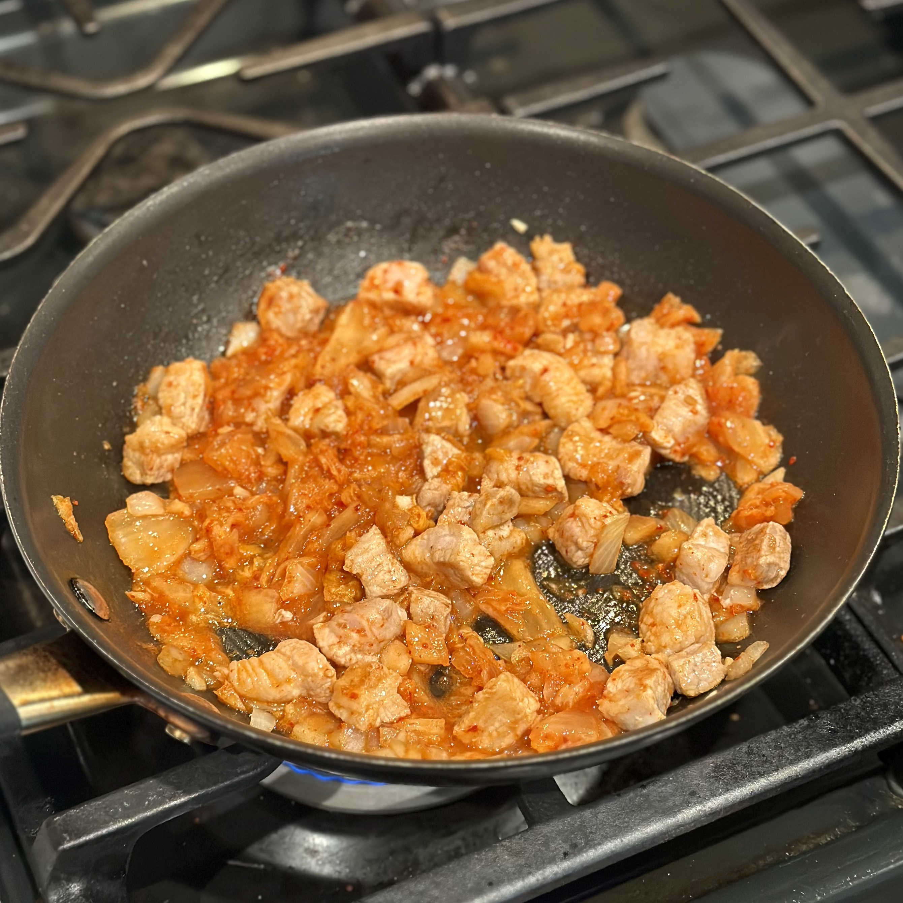
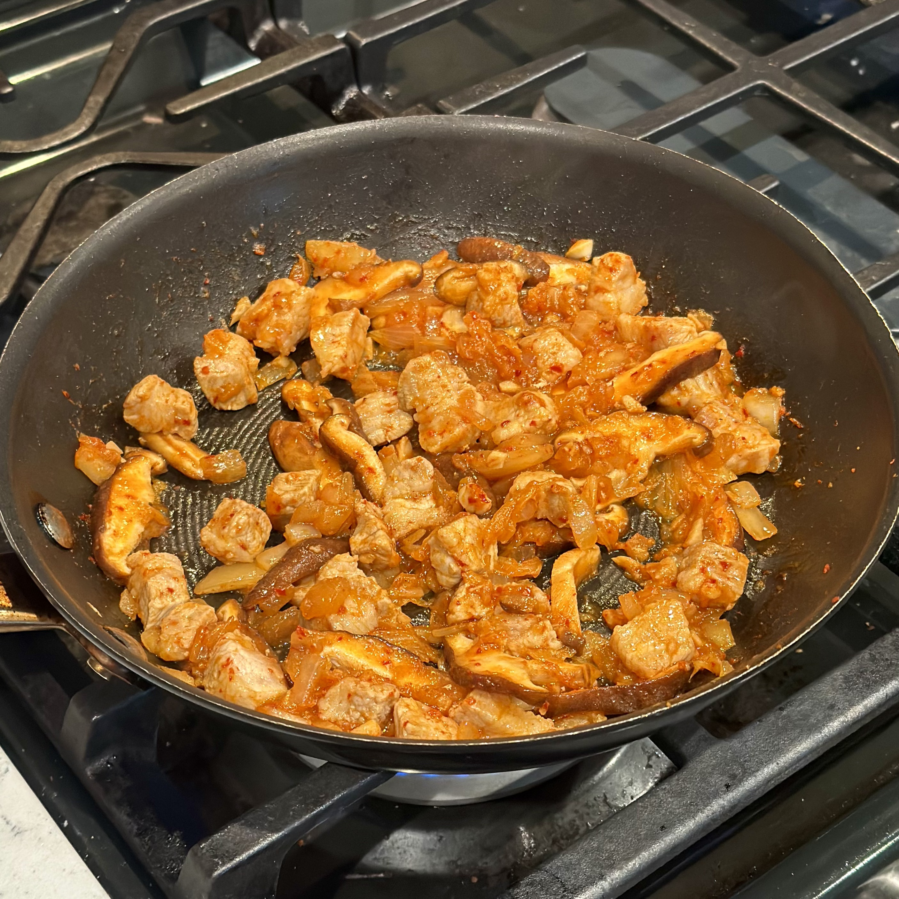
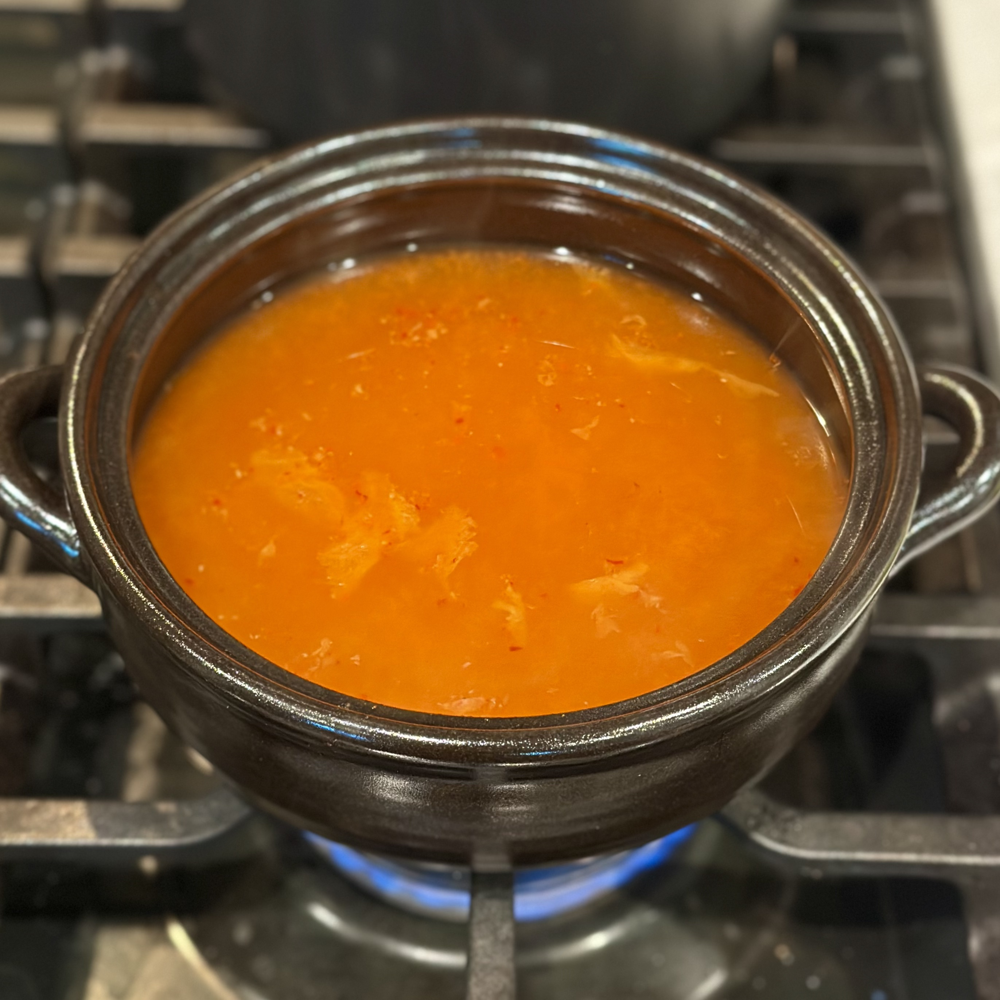
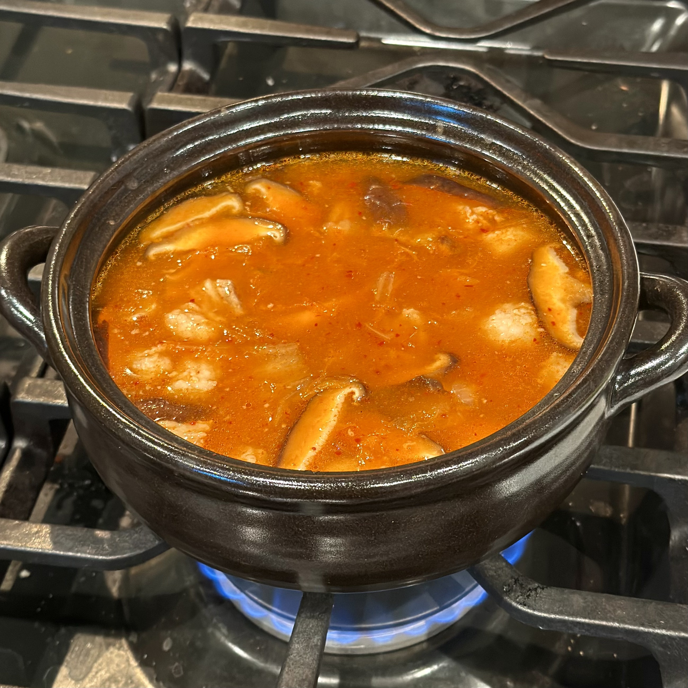
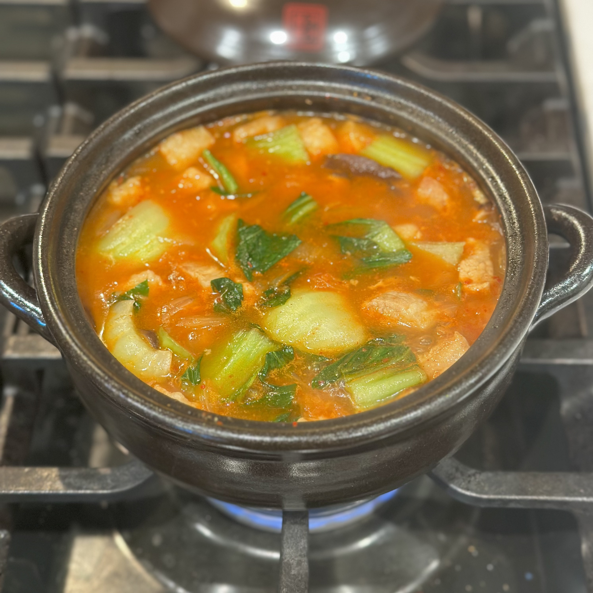
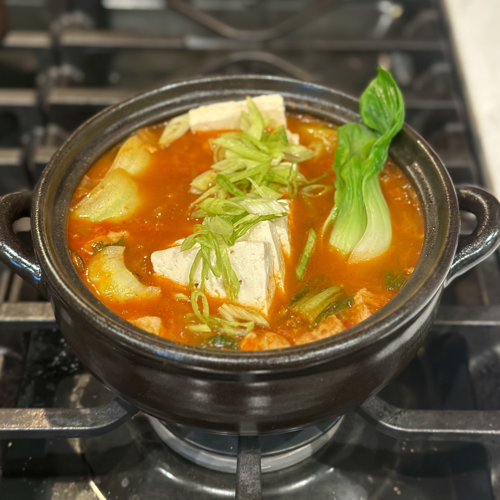

Kimchi jjigae in a ttukbaegi.

Kimchi jjigae served with a bowl of rice.
Overview
What is kimchi jjigae?
Kimchi jjigae (김치찌개, jjigae pronounced "jee-gay") is a dish belonging to a broader category of Korean foods known as jjigae, or Korean stews. Jjigae are generally served hot alongside rice and other dishes, often in the vessel in which they were cooked. In kimchi jjigae, kimchi is simmered with broth and other ingredients like pork, tofu, and green onion. Well-fermented kimchi gives the broth its strong, characteristic flavor. Unlike in many Korean meals, kimchi serves not simply as an accompaniment but as the defining ingredient of the stew.
Origin and History
Kimchi jjigae likely developed as a practical way of using kimchi that had become too old or sour to be enjoyed on its own. Dating the dish precisely is difficult because kimchi itself has changed considerably over Korean history. Earlier forms of kimchi existed long before the familiar red varieties eaten today. Chili peppers reached Korea during the Joseon period (1392-1910), and their incorporation into kimchi contributed to the development of the forms that eventually became characteristic of modern Korean cuisine. It is believed that the familiar form of kimchi jjigae developed after chili-seasoned kimchi began to appear.
Ingredients and Variations
For this dish, there is no single required set of ingredients other than kimchi itself. Pork is particularly common, with fatty cuts such as pork belly contributing to the richness of the broth. Tofu, green onion, garlic, and chili seasonings are also common. Older descriptions of the dish likewise show considerable variation, including beef, pork, fermented soybean paste, or gochujang.
The condition of the kimchi can have as much influence on the finished stew as the additional ingredients. Fully fermented kimchi develops a stronger acidity and a more pronounced fermented flavor, making older kimchi especially useful for cooking. This also makes kimchi jjigae a practical way to use up older kimchi.
Serving and Eating
Kimchi jjigae is typically served piping hot with steamed white rice. The rich, spicy, and sour broth contrasts with the relatively neutral rice, while pieces of kimchi, tofu, meat, and other ingredients make the stew substantial enough to form the centerpiece of a meal. It is often prepared and served in an earthenware vessel such as a ttukbaegi, which retains heat particularly well.
Recipe
Ingredients
- 500 g anchovy or kelp stock[1]
- 125 g pork belly, diced
- 2 cloves garlic, minced
- 1/8 yellow onion, diced
- 120 g kimchi, diced[2]
- 3 shiitake mushrooms, sliced thin (optional)
- 50 g kimchi juice
- 1 tbsp gochujang
- 1 tbsp soy sauce
- 1 tsp sesame oil
- 1 baby bok choy, chopped and blanched (optional)[3]
- 225 g tofu, sliced into large squares
Directions
- Put the stock in a pot and bring to a gentle boil while preparing the other ingredients.
- Add the diced pork belly to a lightly oiled pan and cook over medium heat until the outside has begun to brown.[4]
- Add the garlic and onion and fry until the garlic is fragrant and the onions are slightly translucent.
- Stir in the diced kimchi and cook until the liquid begins to reduce, then add in the mushrooms. Cook until the mushrooms begin to soften.
- To the boiling stock, stir in kimchi juice and gochujang. Then, incorporate the fried ingredients.
- Cover the pot and let simmer for 10-15 minutes, until the base has reached your desired consistency and flavor.
- Add the soy sauce, sesame oil, and baby bok choy and mix thoroughly, then top with the sliced tofu and simmer just until the tofu is heated through.
- Serve hot, topped with green onions and a side of white rice.
Notes
- It is also perfectly acceptable to use water or prepare the stock with powdered dashi.
- Well-fermented, sour kimchi works best. Fresh kimchi will not bring as much flavor to the broth or become as tender.
- This ingredient is non-traditional, so it can be skipped if preferred. Alternatively, other greens such as spinach or napa cabbage also work well.
- If using a sturdier pot, everything can be prepared in the same vessel. Just add the stock and bring to a boil after Step 4 instead.







See Also
 Tteokbokki
Tteokbokki
 Mapo Tofu
Mapo Tofu
References
- Lee, Seong-u. “김치 [Kimchi].” Encyclopedia of Korean Culture, Academy of Korean Studies, 17 Jan. 2024, encykorea.aks.ac.kr/Article/E0010822. Accessed 30 Aug. 2026.
- Ro, Hyosun. “Kimchi Jjigae (Kimchi Stew).” Korean Bapsang, 27 Dec. 2020, updated 11 May 2021, koreanbapsang.com/kimchi-jjigae-kimchi-stew. Accessed 30 Aug. 2026.
- Yun, Deok-in. “김치찌개 [Kimchi Jjigae].” Encyclopedia of Korean Culture, Academy of Korean Studies, 7 Feb. 2023, encykorea.aks.ac.kr/Article/E0010836. Accessed 30 Aug. 2026.